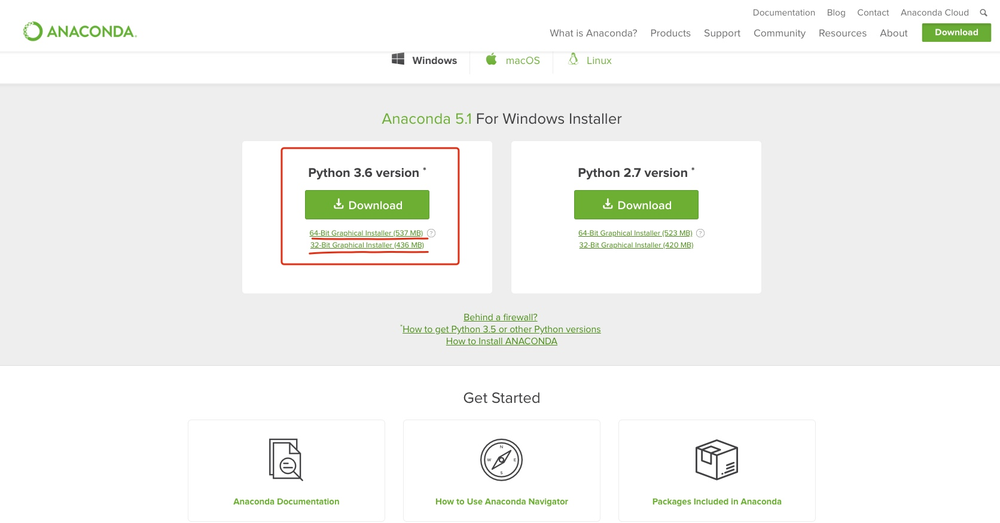

简介
Fabric是一个用Python开发的部署工具，最大特点是不用登录远程服务器，在本地运行远程命令，几行Python脚本就可以轻松部署。
Fabric提供几个简单的API来完成所有的部署，最常用的是local()和run()，分别在本地和远程执行命令，put()可以把本地文件上传到远程，当需要在远程指定当前目录时，只需用with cd('/path/to/dir/'):即可。
默认情况下，当命令执行失败时，Fabric会停止执行后续命令。有时，我们允许忽略失败的命令继续执行，比如run('rm /tmp/abc')在文件不存在的时候有可能失败，这时可以用with settings(warn_only=True):执行命令，这样Fabric只会打出警告信息而不会中断执行。
Fabric是如何在远程执行命令的呢
其实Fabric所有操作都是基于SSH执行的，必要时它会提示输入口令，所以非常安全。更好的办法是在指定的部署服务器上用证书配置无密码的ssh连接。
如果是基于团队开发，可以让Fabric利用版本库自动检出代码，自动执行测试、打包、部署的任务。由于Fabric运行的命令都是基本的Linux命令，所以根本不需要用Fabric本身来扩展，会敲Linux命令就能用Fabric部署。
安装
在windows上安装可能会有各种依赖的问题,安装就可能没有那么顺利.
为了减少麻烦.我们直接把你电脑上的原装python都给卸载了吧,无论你是python2还是python3.都卸载了.
我们直接在windows上安装Anaconda包.Anaconda是给机器学习学习者集成的python环境,可以给不想折腾的同学,节省很多安装的时间.
下载安装Anaconda
官网下载安装包

下载python3.6吧,毕竟python2在以后python社区会逐渐的不再维护支持了.另外Anaconda中的python3,可以用虚拟环境创建python2.7的虚拟环境.
下载如图所示后,会有安装包,点击下一步之类的就安装好了,记得在安装的过程中要点上配置环境变量.如果你错过了,那么就只能在安装完成后,自己手动的配置Anaconda的环境变量了.
手动配置Anaconda环境变量参考网上文章,和一般的环境变量没啥区别.
创建python2.7的虚拟环境
因为fabric.py脚本是在python2.7下写的.因此咱们需要创建一个python2.7的环境,然后在这个环境里面下载安装fabric模块
- 创建python2.7虚拟环境
conda create -n python27 python=2.7
- 激活python2.7的虚拟环境
activate python27
- 在python2.7环境下安装fabric模块
pip install fabric
到此已经把fabric模块安装完成了.接下来就是使用了.
- 退出python2.7的虚拟环境
deactivate
使用
fabric常用api
| 函数 | 解释 | 例子 |
|---|---|---|
| local | 执行本地命令 | local('ls -l') |
| lcd | 切换本地目录(需要with包裹) | lcd('本地目录') |
| run | 执行远程命令 | run('ls -l') |
| cd | 切换远程目录(需要with包裹) | cd('远程目录') |
| put | 将本地文件上传至远程目录 | put('本地文件','远程目录') |
| env | fabric环境，配置远程ip、端口、密码 | 见下文 |
fabric远程执行例子
想好你的上线步骤,比如我平时的上线步骤就是这么几步.
- 拉取SVN代码
- 本地编译打包
- 上传到服务器
- 备份服务器上的上一个版本
- 部署到服务器指定目录
- 清理多余文件
- 相关Jar包和文件上传到HDFS
如果不符合你的业务需求,可以参考脚本做相应的修改.
Mac下的脚本
# -*- coding: utf-8 -*-
"""
Created by hushiwei on 2017/10/16
desc : 自动化部署上线
1. 更新代码到指定分支
2. 执行 fab deploy
3. OK...
"""
import os
import datetime
from fabric.api import *
from fabric.contrib.console import confirm
from fabric.colors import blue, red, green
from fabric.contrib.files import *
import sys
local_dir = "/Users/hushiwei/demo/auto_deploy/"
remote_project = "/home/hadoop/statistics/ad/"
remote_dir = "/home/hadoop/statistics/auto_deploy/"
remote_dir_bak = "/home/hadoop/statistics/auto_deploy_bak/"
svn_path = "svn://svn.gm825.com/code/server/bigdata/xxxxxxxxxxx"
hdfs_path = "/user/oozie/ad/"
env.user = "xxxxxxx"
env.hosts = ['***.***.***.***']
env.password = '**********'
def today():
return datetime.date.today().strftime("%Y%m%d")
def svn_to_local(project_name):
'''
fab svn_to_local:project_name=quickapp
把项目SVN的trunk代码checkout到本地
:param project_name:
:return:
'''
print green('Checking out the project, SVN Path Is : %s' % svn_path)
if not os.path.exists(local_dir):
local('mkdir ' + local_dir)
with lcd(local_dir):
local('rm -rf ' + local_dir + project_name)
local('svn co ' + svn_path, capture=True)
local('mv {svn_name} {project_name} '.format(svn_name=svn_path.split("/")[-1],project_name=project_name))
print green('Checkout The Project --- Finished!')
def pack_project(project_name):
'''
fab pack_project:project_name=quickapp
把本地项目打成tar包,准备上传到服务器
:param project_name:
:return:
'''
with lcd(local_dir + project_name):
local("find " + local_dir + project_name + " -name '.svn' | xargs rm -rf")
print(green("Removed the .svn file --- Finished, Pack the project"))
local('mvn clean scala:compile compile package -DskipTests', capture=True)
local('mv oozie %s' % project_name)
local('mv target/*-jar-with-dependencies.jar {project_name}/'.format(project_name=project_name))
local('mv target/*-SNAPSHOT.jar {project_name}/{project_name}_streaming'.format(project_name=project_name))
local('tar cfz {local_dir}{project_name}.tar.gz {project_name}/*'.format(
project_name=project_name, local_dir=local_dir))
print green('Pack the Project --- Finished!')
def backup_serverfile(project_name):
'''
备份服务器上的项目
:param project_name:
:return:
'''
print green("Back the project on server")
with cd(remote_project):
with settings(warn_only=True):
# 创建备份文件目录
if not exists(remote_dir_bak):
run("mkdir "+remote_dir_bak)
run(
"tar cfz " + remote_dir_bak + project_name + "_" + today() + ".tar.gz --exclude source_log " + project_name + "/")
run("cp -r " + project_name + " " + project_name + "_" + today())
print green("Back up the project on server --- Finished!")
def put_package(project_name):
'''
上传发布包到远程服务器
:param project_name:
:return:
'''
if not exists(remote_dir):
run("mkdir "+remote_dir)
print green("Start upload the Project to the Server ...")
with cd(remote_dir):
with settings(warn_only=True):
result = put(local_dir + project_name + ".tar.gz",
remote_dir + project_name + ".tar.gz")
if result.failed and not confirm("put file failed,Continue?"):
abort("Aborting file put task!")
print green("Put the package to remote server --- Finished!")
def deploy_project(project_name):
'''
解压线上tar包,进行部署项目
:param project_name:
:return:
'''
with cd(remote_dir):
with settings(warn_only=True):
result = run("tar zxf " + project_name + ".tar.gz -C " + remote_project)
if result.failed:
print red("Deploy the Project Failed,Roll backing")
roll_back(project_name)
run("cd {remote_project} && chown -R hadoop:hadoop {project_name}".format(
remote_project=remote_project, project_name=project_name))
print(green("Deploy the package at the server --- Finished"))
def clear_deploy(project_name):
'''
删除部署后留下的多余文件
:param project_name:
:return:
'''
with cd(remote_project):
run('rm -rf ' + project_name + "_" + today())
with cd(remote_dir):
run("rm -rf " + project_name + ".tar.gz")
print green("Clear the files at the server --- Finished")
def roll_back(project_name):
'''
当部署失败后,回滚到前一个备份版本
:param project_name:
:return:
'''
run("rm -rf " + project_name)
run("mv " + project_name + "_" + today() + " " + project_name)
print red("Roll back deploy --- Finished")
@runs_once
@task
def prepare_deploy(project_name="quickapp"):
"""
部署前准备，下载最新版代码，打包代码
"""
svn_to_local(project_name)
pack_project(project_name)
def upload_files(project_name):
hdfs_work=hdfs_path+project_name+"/"
with cd(remote_project + project_name):
run("hadoop fs -put -f ./{wf,hourwf,offlinewf,targetingwf} %s" % hdfs_work)
print green("upload files to hdfs --- Finished")
def upload_jars(project_name):
hdfs_work=hdfs_path+project_name+"/"
wfPaths = ['wf', 'hourwf','offlinewf','targetingwf']
with cd(remote_project + project_name):
for i in range(len(wfPaths)):
run("hadoop fs -put -f ./*.jar " + hdfs_work + wfPaths[i] + "/lib")
print green("upload jars to hdfs --- Finished")
@task
def upload_hdfs(project_name="quickapp"):
'''
将项目上传到hdfs
:return:
'''
upload_files(project_name)
upload_jars(project_name)
@task
def upload_hdfs_by_exec_shell(project_name="quickapp"):
'''
通过调用项目里面的upgrade.sh脚本来上传项目到hdfs
:param project_name:
:return:
'''
with cd(remote_project):
run("cd %s/wf/shell && sh upgrade.sh " % project_name)
@task
def deploy(project_name="quickapp", prepated=True):
'''
本地打包,部署到线上服务器,上传到HDFS全流程
:param project_name:
:param prepated:
:return:
'''
if prepated == True:
prepare_deploy(project_name)
# 上传
put_package(project_name)
# 备份
backup_serverfile(project_name)
# 部署
deploy_project(project_name)
# 清理
clear_deploy(project_name)
# 上传hdfs
upload_hdfs(project_name)
Windows下的脚本
# -*- coding: utf-8 -*-
"""
Created by hushiwei on 2017/10/16
desc : 自动化部署上线
1. 更新代码到trunk.
2. 执行 fab deploy
3. OK...
"""
import os
import datetime
from fabric.api import *
from fabric.contrib.console import confirm
from fabric.colors import blue, red, green
from fabric.contrib.files import *
import os,tarfile
local_dir = "D:\wanka\svn_project\dsp_interact\\"
remote_project = "/home/hadoop/statistics/ad/"
remote_dir = "/home/hadoop/statistics/auto_deploy/"
remote_dir_bak = "/home/hadoop/statistics/auto_deploy_bak/"
svn_path = "svn://svn.gm825.com/code/server/bigdata/xxxxxxxxxx"
hdfs_path = "/user/oozie/ad/"
env.user = "xxxxxxx"
env.hosts = ['***.***.***.***']
env.password = '**********'
# python在windows环境打tar包.output_filename为tar包文件,source_dir为要打包的目录
def make_targz(output_filename, source_dir):
with tarfile.open(output_filename, "w:gz") as tar:
tar.add(source_dir, arcname=os.path.basename(source_dir))
def today():
return datetime.date.today().strftime("%Y%m%d")
def svn_to_local(project_name):
'''
fab svn_to_local:project_name=dsp_interaction_ad
把项目SVN的trunk代码checkout到本地
:param project_name:
:return:
'''
print green('Checking out the project, SVN Path Is : %s' % svn_path)
if not os.path.exists(local_dir):
local('mkdir ' + local_dir)
with lcd(local_dir):
# local('rm -rf ' + local_dir + project_name)
local('if exist ' + local_dir + project_name + ' (rd /s /q ' + local_dir + project_name + ')')
local('if exist ' + local_dir + project_name + '.tar.gz (del ' + local_dir + project_name + '.tar.gz)')
local('svn co ' + svn_path, capture=True)
local('rename {svn_name} {project_name} '.format(svn_name=svn_path.split("/")[-1],project_name=project_name))
print green('Checkout The Project --- Finished!')
def pack_project(project_name):
'''
fab pack_project:project_name=dsp_interaction_ad
把本地项目打成tar包,准备上传到服务器
:param project_name:
:return:
'''
# with lcd(local_dir + project_name):
with lcd(local_dir):
local("rd /s /q " + local_dir + project_name + '\\.svn', capture=True)
print(green("Removed the .svn file --- Finished, Pack the project"))
with lcd(local_dir + project_name):
local('mvn clean scala:compile compile package -DskipTests', capture=True)
local('rename oozie %s' % project_name)
local('move target\\*-jar-with-dependencies.jar {project_name}\\'.format(project_name=project_name))
local('move target\\*-SNAPSHOT.jar {project_name}\\{project_name}_streaming'.format(project_name=project_name))
make_targz(local_dir + project_name + '.tar.gz', local_dir + project_name + '\\' + project_name)
print green('Pack the Project --- Finished!')
def backup_serverfile(project_name):
'''
备份服务器上的项目
:param project_name:
:return:
'''
print green("Back the project on server")
with cd(remote_project):
with settings(warn_only=True):
# 创建备份文件目录
if not exists(remote_dir_bak):
run("mkdir "+remote_dir_bak)
run(
"tar cfz " + remote_dir_bak + project_name + "_" + today() + ".tar.gz --exclude source_log " + project_name + "/")
run("cp -r " + project_name + " " + project_name + "_" + today())
print green("Back up the project on server --- Finished!")
def put_package(project_name):
'''
上传发布包到远程服务器
:param project_name:
:return:
'''
if not exists(remote_dir):
run("mkdir "+remote_dir)
print green("Start upload the Project to the Server ...")
with cd(remote_dir):
with settings(warn_only=True):
result = put(local_dir + project_name + ".tar.gz",
remote_dir + project_name + ".tar.gz")
if result.failed and not confirm("put file failed,Continue?"):
abort("Aborting file put task!")
print green("Put the package to remote server --- Finished!")
def deploy_project(project_name):
'''
解压线上tar包,进行部署项目
:param project_name:
:return:
'''
with cd(remote_dir):
with settings(warn_only=True):
result = run("tar zxf " + project_name + ".tar.gz -C " + remote_project)
if result.failed:
print red("Deploy the Project Failed,Roll backing")
roll_back(project_name)
run("cd {remote_project} && chown -R hadoop:hadoop {project_name}".format(
remote_project=remote_project, project_name=project_name))
print(green("Deploy the package at the server --- Finished"))
def clear_deploy(project_name):
'''
删除部署后留下的多余文件
:param project_name:
:return:
'''
with cd(remote_project):
run('rm -rf ' + project_name + "_" + today())
with cd(remote_dir):
run("rm -rf " + project_name + ".tar.gz")
print green("Clear the files at the server --- Finished")
def roll_back(project_name):
'''
当部署失败后,回滚到前一个备份版本
:param project_name:
:return:
'''
run("rm -rf " + project_name)
run("mv " + project_name + "_" + today() + " " + project_name)
print red("Roll back deploy --- Finished")
@runs_once
@task
def prepare_deploy(project_name="dsp_interaction_ad"):
"""
部署前准备，下载最新版代码，打包代码
"""
svn_to_local(project_name)
pack_project(project_name)
def upload_files(project_name):
hdfs_work=hdfs_path+project_name+"/"
with cd(remote_project + project_name):
run("hadoop fs -put -f ./{wf,hourwf,offlinewf,targetingwf} %s" % hdfs_work)
print green("upload files to hdfs --- Finished")
def upload_jars(project_name):
hdfs_work=hdfs_path+project_name+"/"
wfPaths = ['wf', 'hourwf','offlinewf','targetingwf']
with cd(remote_project + project_name):
for i in range(len(wfPaths)):
run("hadoop fs -put -f ./*.jar " + hdfs_work + wfPaths[i] + "/lib")
print green("upload jars to hdfs --- Finished")
@task
def upload_hdfs(project_name="dsp_interaction_ad"):
'''
将项目上传到hdfs
:return:
'''
upload_files(project_name)
upload_jars(project_name)
@task
def upload_hdfs_by_exec_shell(project_name="dsp_interaction_ad"):
'''
通过调用项目里面的upgrade.sh脚本来上传项目到hdfs
:param project_name:
:return:
'''
with cd(remote_project):
run("cd %s/wf/shell && sh upgrade.sh " % project_name)
@task
def deploy(project_name="dsp_interaction_ad", prepated=True):
'''
本地打包,部署到线上服务器,上传到HDFS全流程
:param project_name:
:param prepated:
:return:
'''
if prepated == True:
prepare_deploy(project_name)
# 上传
put_package(project_name)
# 备份
backup_serverfile(project_name)
# 部署
deploy_project(project_name)
# 清理
clear_deploy(project_name)
# 上传hdfs
upload_hdfs(project_name)
执行命令
在执行fab命令之前,需要先激活之前安装的python2.7虚拟环境.在这个环境下才可以执行fab命令
activate python27
激活python2.7环境后,我们就在fabric.py文件的同级目录下执行fab deploy即可一键上线
fab deploy
至于其他更加详细的命令,可以执行fab -h参考官方说明.
hushiwei@hsw ~ fab -h
Usage: fab [options] <command>[:arg1,arg2=val2,host=foo,hosts='h1;h2',...] ...
Options:
-h, --help show this help message and exit
-d NAME, --display=NAME
print detailed info about command NAME
-F FORMAT, --list-format=FORMAT
formats --list, choices: short, normal, nested
-I, --initial-password-prompt
Force password prompt up-front
--initial-sudo-password-prompt
Force sudo password prompt up-front
-l, --list print list of possible commands and exit
--set=KEY=VALUE,... comma separated KEY=VALUE pairs to set Fab env vars
--shortlist alias for -F short --list
-V, --version show program's version number and exit
-a, --no_agent don't use the running SSH agent
-A, --forward-agent forward local agent to remote end
--abort-on-prompts abort instead of prompting (for password, host, etc)
-c PATH, --config=PATH
specify location of config file to use
--colorize-errors Color error output
-D, --disable-known-hosts
do not load user known_hosts file
-e, --eagerly-disconnect
disconnect from hosts as soon as possible
-f PATH, --fabfile=PATH
python module file to import, e.g. '../other.py'
-g HOST, --gateway=HOST
gateway host to connect through
--gss-auth Use GSS-API authentication
--gss-deleg Delegate GSS-API client credentials or not
--gss-kex Perform GSS-API Key Exchange and user authentication
--hide=LEVELS comma-separated list of output levels to hide
-H HOSTS, --hosts=HOSTS
comma-separated list of hosts to operate on
-i PATH path to SSH private key file. May be repeated.
-k, --no-keys don't load private key files from ~/.ssh/
--keepalive=N enables a keepalive every N seconds
--linewise print line-by-line instead of byte-by-byte
-n M, --connection-attempts=M
make M attempts to connect before giving up
--no-pty do not use pseudo-terminal in run/sudo
-p PASSWORD, --password=PASSWORD
password for use with authentication and/or sudo
-P, --parallel default to parallel execution method
--port=PORT SSH connection port
-r, --reject-unknown-hosts
reject unknown hosts
--sudo-password=SUDO_PASSWORD
password for use with sudo only
--system-known-hosts=SYSTEM_KNOWN_HOSTS
load system known_hosts file before reading user
known_hosts
-R ROLES, --roles=ROLES
comma-separated list of roles to operate on
-s SHELL, --shell=SHELL
specify a new shell, defaults to '/bin/bash -l -c'
--show=LEVELS comma-separated list of output levels to show
--skip-bad-hosts skip over hosts that can't be reached
--skip-unknown-tasks skip over unknown tasks
--ssh-config-path=PATH
Path to SSH config file
-t N, --timeout=N set connection timeout to N seconds
-T N, --command-timeout=N
set remote command timeout to N seconds
-u USER, --user=USER username to use when connecting to remote hosts
-w, --warn-only warn, instead of abort, when commands fail
-x HOSTS, --exclude-hosts=HOSTS
comma-separated list of hosts to exclude
-z INT, --pool-size=INT
number of concurrent processes to use in parallel mode